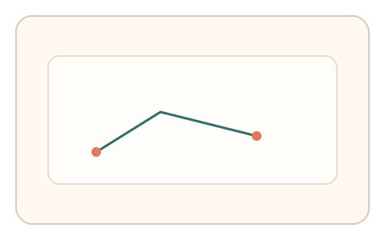
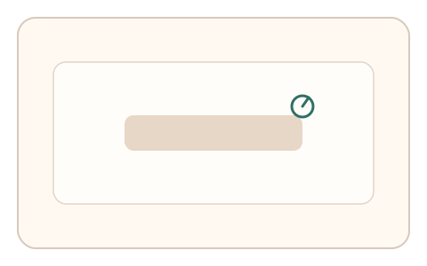
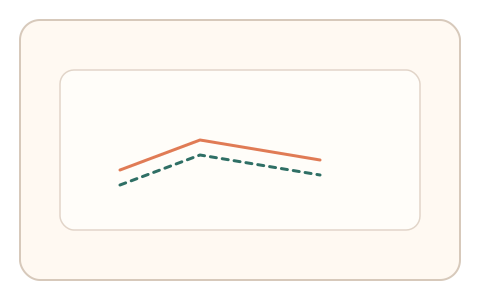

#155
Reverse Brainstorming - Round 1
已扩展
异步回验链
主任务完成后异步触发短回验，验证与先前行为的一致性。
概念原文
在主任务完成后异步触发短回验，验证与先前交互的意图一致性（路径/停顿/节律），并做异常检测。
暴力/一次性解答难以跨时保持一致性。
研究背景
一次性解答难以跨时间保持一致性。异步回验可捕捉意图与节律的持续性，抬高回放与脚本成本。
核心机制
- 主任务完成后延迟触发回验。
- 回验复用先前任务的关键特征。
- 对比路径、停顿或节律一致性。
- 以一致性链作为判定依据。
用户流程
- 步骤 1：用户完成主任务。
- 步骤 2：系统异步触发短回验。
- 步骤 3：系统比较前后一致性并判定。
判定信号
前后节律一致性
真实用户节律保持相似结构。
路径/停顿复现度
回放容易过度一致或失真。
判定逻辑
一致性需在合理区间；过度一致或无关联判异常。
对抗面
- 脚本记录并重放全链
- 随机生成回验轨迹
防御与缓解
- 回验时机与形式随机化
- 回验内容与主任务轻度变形
- 多次回验取一致性
可达性与风险
回验任务保持低负担并可跳转替代通道。
- 异步回验增加流程时长
- 短时记忆差异导致误拒
可视化状态

状态 1：主任务完成
记录主任务行为信号。

状态 2：异步回验
延迟触发短回验任务。

状态 3：一致性链
比较前后链路一致性。
参考资料
Behavioral biometrics
说明跨时间行为一致性。
Short-term memory
说明短时记忆与回验关联。